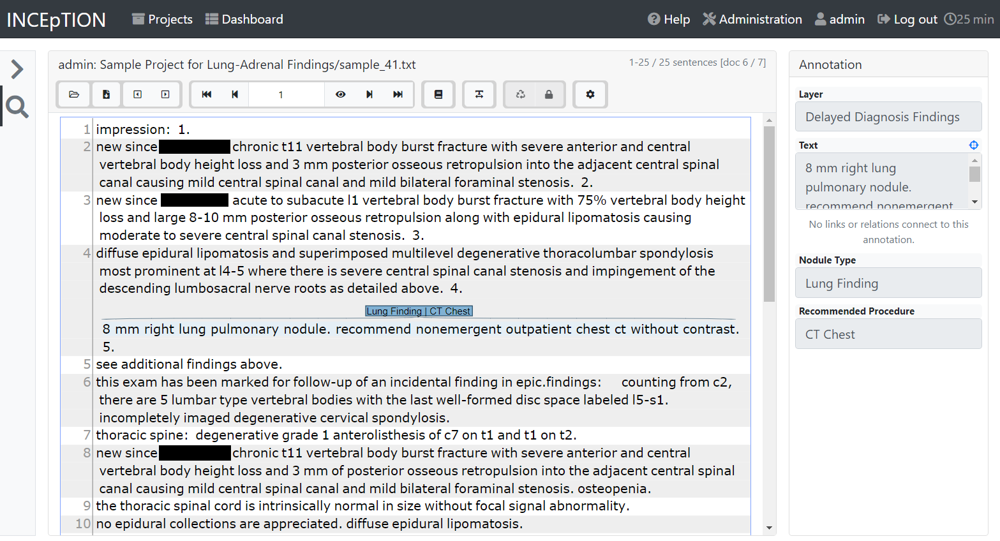

Prerequisites
Data
To train your own models on your own data, you will need labeled data. Trained in annotating radiology reports, NM nurses labeled 36,385 reports with 5,779 (15.9%) and 409 (1.1%) lung and adrenal follow-up recommendations, respectively, for this work. Ultimately, these reports were saved into a dataframe according to the table below. Note that this can be customized to fit your needs: different data sources, classification problems, etc. A de-identified example of such a dataframe is provided below.
Info |
Dataframe Heading |
Values |
|---|---|---|
Radiology Report |
|
Entire report directly from Epic |
Finding |
|
|
Recommended Procedure |
|
|
Relevant Portion of the Report with respect to the Finding |
|
Findings portion of the report 1 |
De-identified report number |
|
Randomly generated |
For labeling, we used the open source INCEpTION platform. A screenshot of the platform is shown below.
rpt_num |
note |
selected_finding |
selected_proc |
selected_label |
|---|---|---|---|---|
1 |
PROCEDURE: CT CHEST WO CONTRAST. HISTORY: Wheezing TECHNIQUE: Non-contrast helical thoracic CT was performed. COMPARISON: There is no prior chest CT for comparison. FINDINGS: Support Devices: None. Heart/Pericardium/Great Vessels: Cardiac size is normal. There is no calcific coronary artery atherosclerosis. There is no pericardial effusion. The aorta is normal in diameter. The main pulmonary artery is normal in diameter. Pleural Spaces: Few small pleural calcifications are present in the right pleura for example on 2/62 and 3/76. The pleural spaces are otherwise clear. Mediastinum/Hila: There is no mediastinal or hilar lymph node enlargement. Subcentimeter minimally calcified paratracheal lymph nodes are likely related to prior granulomas infection. Neck Base/Chest Wall/Diaphragm/Upper Abdomen: There is no supraclavicular or axillary lymph node enlargement. Limited, non-contrast imaging through the upper abdomen is within normal limits. Mild degenerative change is present in the spine. Lungs/Central Airways: There is a 15 mm nodular density in the nondependent aspect of the bronchus intermedius on 2/52. The trachea and central airways are otherwise clear. There is mild diffuse bronchial wall thickening. There is a calcified granuloma in the posterior right upper lobe. The lungs are otherwise clear. CONCLUSIONS: 1. There is mild diffuse bronchial wall thickening suggesting small airways disease such as asthma or bronchitis in the appropriate clinical setting. 2. A 3 mm nodular soft tissue attenuation in the nondependent aspect of the right bronchus intermedius is nonspecific, which could be mucus or abnormal soft tissue. A follow-up CT in 6 months might be considered to evaluate the growth. 3. Stigmata of old granulomatous disease is present.   FINAL REPORT Attending Radiologist: |
Lung Findings |
CT Chest |
A 3 mm nodular soft tissue attenuation in the nondependent aspect of the right bronchus intermedius is nonspecific, which could be mucus or abnormal soft tissue. A follow-up CT in 6 months might be considered to evaluate the growth. |
2 |
PROCEDURE: CT ABDOMEN PELVIS W CONTRAST COMPARISON: date INDICATIONS: Lower abdominal/flank pain on the right TECHNIQUE: After obtaining the patients consent, CT images were created with intravenous iodinated contrast. FINDINGS: LIVER: The liver is normal in size. No suspicious liver lesion is seen. The portal and hepatic veins are patent. BILIARY: No biliary duct dilation. The biliary system is otherwise unremarkable. PANCREAS: No focal pancreatic lesion. No pancreatic duct dilation. SPLEEN: No suspicious splenic lesion is seen. The spleen is normal in size. KIDNEYS: No suspicious renal lesion is seen. No hydronephrosis. ADRENALS: No adrenal gland nodule or thickening. AORTA/VASCULAR: No aneurysm. RETROPERITONEUM: No lymphadenopathy. BOWEL/MESENTERY: The appendix is normal. No bowel wall thickening or bowel dilation. ABDOMINAL WALL: No hernia. URINARY BLADDER: Incomplete bladder distension limits evaluation, but no focal wall thickening or calculus is seen. PELVIC NODES: No lymphadenopathy. PELVIC ORGANS: Status post hysterectomy. No pelvic mass. BONES: No acute fracture or suspicious osseous lesion. LUNG BASES: No pleural effusion or consolidation. OTHER: Small hiatal hernia. CONCLUSION: 1. No acute process is detected. 2. Small hiatal hernia   FINAL REPORT Attending Radiologist: |
No Findings |
No label |
|
5 |
PROCEDURE: CT ABDOMEN PELVIS W CONTRAST, CT CHEST W CONTRAST HISTORY: Endometrial adenocarcinoma. Status post right lower lobe segmentectomy for metastatic endometrial adenocarcinoma. Total hysterectomy and bilateral salpingo-oophorectomy XX with pathology of endometrial adenocarcinoma. TECHNIQUE: Helical CT of the chest, abdomen and pelvis was performed using non-ionic intravenous contrast. Ingested oral contrast partially opacifies the bowel. COMPARISON: CT chest, CT chest abdomen pelvis. FINDINGS CT CHEST: Support Devices: None. Heart/Pericardium/Great Vessels: Cardiac size is normal. Calcific coronary artery atherosclerosis cannot be evaluated on this exam. There is no pericardial effusion. There is no significant calcific aortic and branch vessel atherosclerosis. The main pulmonary artery is normal in diameter. Pleural Spaces: The pleural spaces are clear. Mediastinum/Hila: There is no mediastinal or hilar lymph node enlargement. Neck Base/Chest Wall/Diaphragm: There is no supraclavicular or axillary lymph node enlargement. Mild degenerative change is present in the spine. Lungs/Central Airways: The central airways are patent and clear. There are new peripheral groundglass opacities within the left lower lobe, lingular left upper lobe and right middle lobe. There are postsurgical changes of right lower lobe segmentectomy. There is stable focus of probable nodular scarring (3/52). There is a curvilinear band of volume loss of the posterior right middle lobe, similar to prior. There are stable pulmonary micronodules in the left upper lobe (3/42) and left lower lobe (3/72). The left lower lobe nodule is likely calcified. FINDINGS CT ABDOMEN/PELVIS: Liver: The liver is normal in size. There is a stable 0.9 cm low-density focus in the right hepatic lobe near the junction of segments 6 and 7 (2/51). An additional punctate low-density focus in the lateral segment of the left hepatic lobe is too small to characterize but stable in size (2/48). Biliary tree: The patient is post cholecystectomy. There is no biliary ductal dilatation. Spleen: The spleen is normal in size. Pancreas: Unremarkable. Adrenal glands: Unremarkable. Kidneys: There are bilateral symmetric nephrograms without hydronephrosis. Lymph nodes: Abdomen: There is no abdominal adenopathy. There is a stable 0.9 cm short axis portal caval lymph node (2/55). Pelvis: There is no pelvic adenopathy. Vasculature: There is no abdominal aortic aneurysm. Atherosclerotic calcification is seen. Peritoneum/mesentery/omentum: There is no free fluid or free air. GI tract: There is no bowel obstruction. There are scattered colonic diverticula. The appendix is normal. Pelvic urogenital structures:The bladder is grossly unremarkable. The patient is post hysterectomy. The patient is post bilateral salpingo-oopherectomy. There is no suspicious soft tissue at the surgical bed. Body wall: There are degenerative changes in the spine. No aggressive osseous lesion is identified. Key: (S/I) = series number / image number IMPRESSION: Chest: 1. New subtle peripheral groundglass opacities of the lung bases. Findings raise the possibility of an inflammatory or infectious process including viral etiologies (such as COVID-19) and should be correlated with symptoms. 2. No convincing evidence of metastatic disease in the chest. 3. Stable pulmonary micronodules. Attention on follow-up imaging. 4. Stable postsurgical change of right lower lobe segmentectomy. Abdomen and pelvis: 1. Postsurgical change of hysterectomy and bilateral salpingo-oophorectomy. No suspicious pelvic mass. 2. Stable subcentimeter low-density foci within the liver, which are too small to characterize. The larger 0.9 cm focus in the right hepatic lobe may represent a small cyst. Attention on follow-up. 3. No lymphadenopathy in the abdomen or pelvis. FINAL REPORT THE ATTENDING RADIOLOGIST INTERPRETED THIS STUDY WITH THE RESIDENT WHOSE NAME APPEARS BELOW, AND FULLY AGREES WITH THE REPORT AND HAS AMENDED THE REPORT WHEN NECESSARY: Attending Radiologist: |
Lung Findings |
Ambiguous |
Stable pulmonary micronodules. Attention on follow-up imaging. |
10 |
PROCEDURE: CT ABDOMEN PELVIS W CONTRAST HISTORY: Epigastric abdominal pain, nausea, and vomiting. Admitted with acute hypoxemic respiratory failure secondary to COVID. TECHNIQUE: Helical CT of the abdomen and pelvis was performed using non-ionic intravenous contrast. Ingested oral contrast partially opacifies the bowel. COMPARISON: Abdominal x-ray, 12/3/2040. Chest x-ray, 12/4/2040. FINDINGS CT ABDOMEN/PELVIS: Lower thorax: There are patchy, multifocal groundglass opacities in the bilateral lung bases, right greater than left. There is a wedge-shaped area of dense consolidation in the dependent right lower lobe and smaller areas of consolidation in the left lower lobe. There are reticular opacities in the dependent lung bases that may represent a component of subsegmental atelectasis. The heart size is normal. Liver: The liver is normal in size. A 0.8 cm cyst is seen in the superior medial left hepatic segment IVa (3/15). Additional low density foci are too small to characterize. Biliary tree: The gallbladder is present. There is no biliary ductal dilatation. Spleen: The spleen is normal in size. Pancreas: The pancreas is normal in size and enhances homogenously. Adrenal glands: The right adrenal gland is unremarkable. There is nodularity to the contour of the left adrenal gland. A 1.2 cm nodule seen in the left adrenal gland (3/23). Kidneys: There are bilateral symmetric nephrograms without hydronephrosis. There are multiple cysts in the kidneys. The largest cyst in the right kidney measures 2.8 cm (3/37). The largest cyst in the left kidney measures 2.4 cm (3/37). Additional small low density foci are too small to characterize. Lymph nodes: Abdomen: There is no abdominal adenopathy. Pelvis: There is no pelvic adenopathy. Vasculature: There is no abdominal aortic aneurysm. Atherosclerotic calcification is seen. Peritoneum/mesentery/omentum: There is no free fluid or free air. GI tract: There is no bowel obstruction. The appendix contains multiple appendicoliths, without CT evidence of appendicitis. Pelvic urogenital structures:Evaluation of the pelvis is limited by streak artifact from a right hip prosthesis. The bladder is unremarkable. The uterus is present. No adnexal mass is seen. Body wall: Calcifications are seen in the posterior inferior abdominal wall subcutaneous tissues. There is a minimal amount of subcutaneous edema in the posterior body wall soft tissues along the midline. A total right hip arthroplasty is identified. There are degenerative changes of the right greater than left sacroiliac joints. There are degenerative changes in the spine. An osseous hemangioma is seen in the T10 vertebral body. There is mild anterior wedging of the T11 vertebral body, consistent with an age indeterminate compression fracture. Key: (S/I) = series number / image number IMPRESSION: 1. An explanation for the patient’s gastrointestinal symptoms is not identified on this examination. Specifically, no bowel obstruction or bowel wall thickening or inflammatory changes seen. 2. Multifocal groundglass opacities and consolidation in the lung bases, consistent with the patient’s history of COVID pneumonia. 3. A 1.2 cm left adrenal nodule is incompletely evaluated on this examination. An adrenal MRI could be obtained if clinically indicated. 4. Age indeterminate compression fracture of T11.   FINAL REPORT THE ATTENDING RADIOLOGIST INTERPRETED THIS STUDY WITH THE RESIDENT WHOSE NAME APPEARS BELOW, AND FULLY AGREES WITH THE REPORT AND HAS AMENDED THE REPORT WHEN NECESSARY: Attending Radiologist: |
Adrenal Findings |
A 1.2 cm left adrenal nodule is incompletely evaluated on this examination. An adrenal MRI could be obtained if clinically indicated. |
Note
For Phase 01 of the project, all preprocessing of the note (i.e., extracting the findings, removing Dr. signatures, etc.) was completed once and saved off as part of the dataframe in the column as new_note. Note that the Phase 01 source code will make use of this column, while the Phase 02 code will reference the original note and perform the preprocessing at the beginning of the training functions.
Required Downloads
Some of the model training scripts require downloads from the internet. Please find them below. Note that the Phase 02 models use 🤗 (Hugging Face), which will download the files automatically.
Project Phase |
Model |
Downloads |
Download Beforehand? |
|---|---|---|---|
Phase 01 |
Findings vs No Finding Model |
✓ |
|
Lung vs Adrenal Findings Model |
BioWordVec word vectors: BioWordVec_PubMed_MIMICIII_d200.bin |
✓ |
|
Comment Extraction Model |
✗ |
||
Lung Recommended Procedure Model |
N/A |
N/A |
|
Phase 02 |
Pretraining |
✗ |
|
Lung Findings, Adrenal Findings, or No Findings Model |
✗ |
||
Comment Extraction Model |
✗ |
||
Lung Recommended Procedure Model |
✗ |
Note
You must have these tools downloaded before running the Phase 01 models. Do this by either manual downloading and extracting in the workspace or using wget in the cli to accomplish the same.